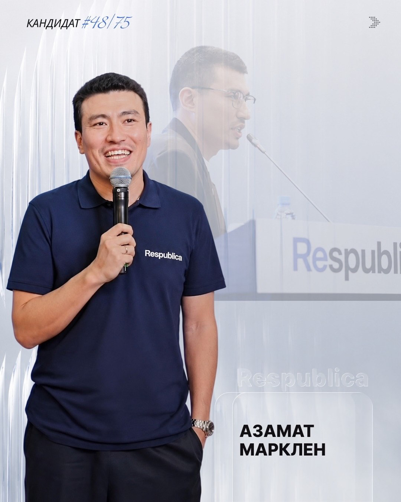
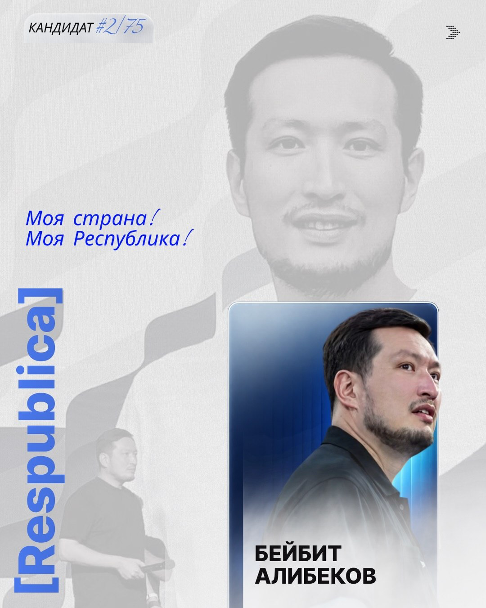
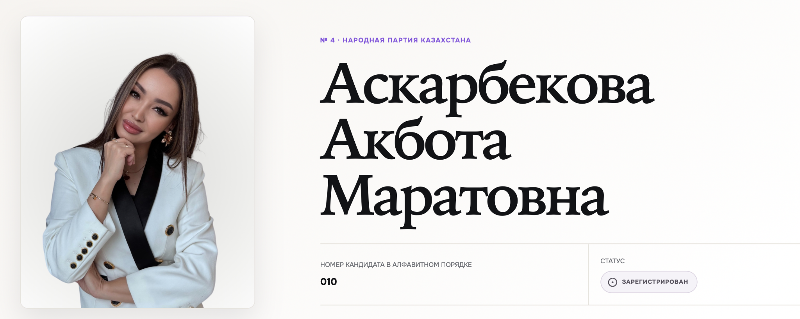
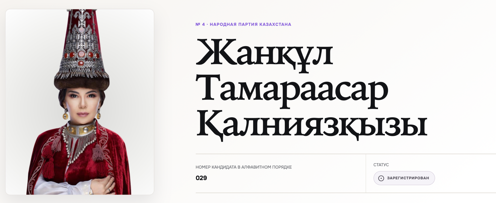
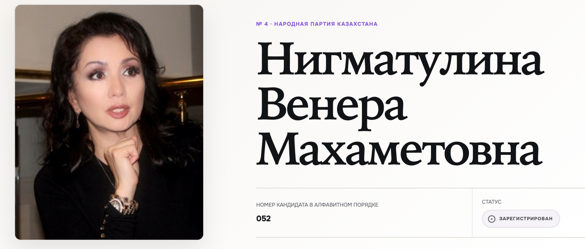

Azamat Marklen
Media / public figure
Political Media Feed · Fall 2026
Celebrity candidates and political identity in Kazakhstan's 2026 Qurultai elections.
Nadira Akbassova
PLS 210 · Research Proposal · Fall 2026
The Media Feed





Does entering electoral politics change how people see them?
The Puzzle
What makes someone count as a politician?
Why Kazakhstan
Not a biography list — a signal of how many different backgrounds now enter electoral politics.
Candidate Feed
Research Question
Epistemological Position
"Do people support celebrity politicians?"
"How do people understand what makes someone a politician?"
Schwartz-Shea (2014)
Literature Review
Amateur candidates without previous elected office.
Legitimacy transferred through visibility, representation, expertise.
Professional identity and perceived authenticity shape interpretation.
Synthesis
The Gap
Analytical Lens
Sensitising concepts — not fixed variables. Participants' own reasoning remains central.
Expectations
May be a key boundary marker.
May provide an alternative basis for political recognition.
May shape whether political identity feels legitimate.
Interpretivist expectations — not hypotheses to statistically test.
Interview Approach
Different professional backgrounds.
Does this person "count" as a politician? Why?
What does their reasoning reveal about what a politician is?
Semi-structured interviews + card sorting.
The cards structure the conversation; participants' explanations guide the interpretation.
Positionality & Reflexivity
Reflection
AI helped phrase a few short lines in my written proposal. I gave Claude my proposal content and asked it to design and build the site, then revised it. Claude also independently checked my five citations and reviewed the proposal against the assignment requirements.
References